id="js_content" style="">
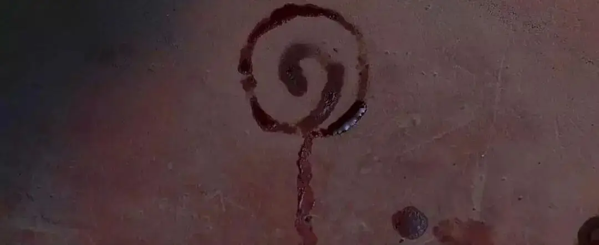
1月23日，武汉封城，疫情告急。
几位朋友便自发建群，商量怎么能够帮点忙。
1月27日，我们发布了恩典中介计划，决定开展针对个人和小医院的点对点援助。
截至目前，恩典中介计划已经进行了一周。
我们一共收到108个求助信息，找到了85位热心的天使（捐助人）。
期间，不断有人主动给我们提供各种帮助和资源渠道。
这些都是对我们极大的鼓励和支持。
这篇文章，我们也将这一周的工作进展向大家公开。
这场美好的仗会一直持续到疫情结束。
恩典中介计划依旧需要你。
一、恩典中介服务指南
恩典中介团队，目前有31个志愿者。
有些是家庭主妇，有些已经开始上班，大家都是在业余时间见缝插针开展援助服务。
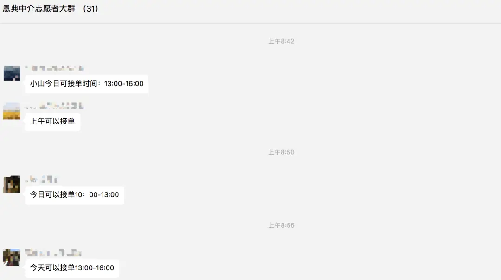
面对复杂繁多的信息，为了提高团队的服务质量。
一周里，我们几经讨论，一边做一边摸索，逐步形成了《恩典中介服务指南》。
这是每一个志愿者热心参与的结果，让我非常感动。
这里节选部分分享给大家，也可以给其他进行点对点服务的团队提供些经验。
1、项目定位
恩典中介平台以分配赈灾物资为主（口罩、酒精棉、防护服等可以帮助缓解一线抗灾压力的医疗物资），坚持不受捐，不采购。
恩典中介平台深知爱心、信心和盼望在抗击此次全国性灾害中的重要性，我们平台中的每一位志愿者也都愿意凭着爱心和诚实，无偿地参与到这次救灾活动中，忠心地完成每一位天使和求助者的信任和托付。
2、组织架构
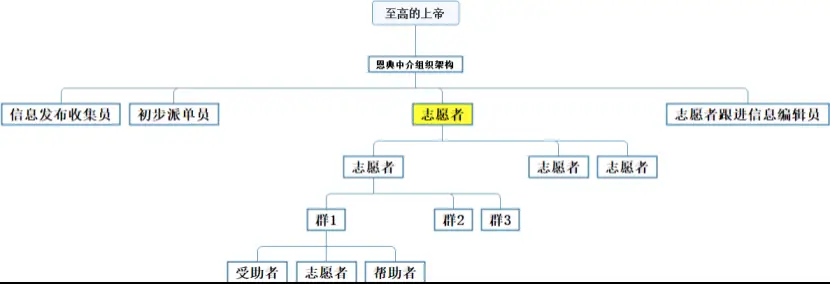
【诗102:19】因为他从至高的圣所垂看。耶和华从天向地观察，
【但2:22】他显明深奥隐秘的事，知道暗中所有的，光明也与他同居。
3、整个流程
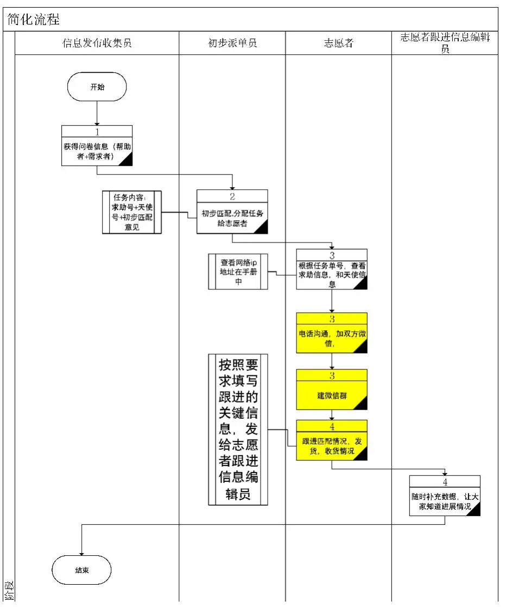
第一步：收集求助消息和帮助信息
第二步：初步派单给志愿者派任务
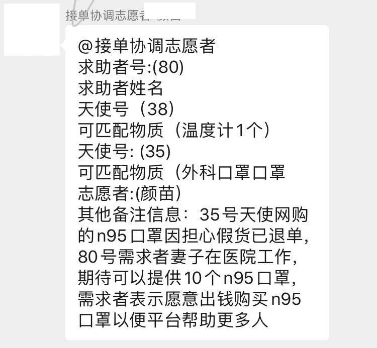
接单意味着你尽快，最好两个小时内你要和双方联系。至于后面对接的步骤只能鼓励天使尽快寄出了，其他寄快递，物流，收获我们关注信息更新就可以了，就不是我们可以把握的。
第三步：志愿者建立联系（志愿者负责）
第四步：志愿者随时告知进展给到（志愿者跟进信息编辑员）
4、针对天使，常见疑问解答：
1）快递是否寄得通？
答：最好寄顺丰快递，目前顺丰说是可以到湖北，请和快递员说明是 “医疗救灾物资，应该怎么备注吗？”如果其他快递公司，例如邮政，只要他们愿意收寄，就有可能寄到。
顺丰理论上的政策每天每个地方不一样，但是具体要和收件的快递员联系，他愿意收就可以发，什么时候到只是时间问题。
2）可以寄消毒水或者酒精等液体吗？
答：顺丰理论上不让寄，但收件的快递员实际上收不收，要看各地方的情况，这边非常缺酒精和消毒液，鼓励你试一下，如果你能寄出来会帮助很大。
3）邮费谁出？如果买的东西特备贵呢？（例如蛋白注射液）
答：恩典中介只是帮助受助者找到捐赠的人，所以鼓励你可以出资购买和邮寄，当然有的需求者表示他可以出钱，你只要帮他买东西寄过去就可以了，那你们自己加微信转账。
为了廉洁，我们平台不直接处理钱，不募捐不捐赠。
4）如果是同城或者很近，我或者我派人送可以送吗？
答：当然可以，但我们很希望您可以有措施保护好自己。其实顺丰也可以同城寄出的。
5）我们想为疫区需要的医疗物资募捐，然后把钱给你们，可以吗？
答：我们恩典中介平台坚持不受捐，不采购。现在有很多人愿意捐钱，但是采购需要很多精力识别货源和价格谈判，这个对我们来说有点难。
所以，你可以鼓励其他爱心人士动员更多人自己去买口罩。因为他们花了钱，就会有责任心去考虑货源的真实性和价格的因素。这样买下来以后，他们就可以注册成为天使了。之后，我们就可以给他匹配捐赠的对象。
二、致谢
首先，感谢求助者信任我们，愿意在恩典中介寻求帮助。
其次，特别感谢天使的热心，在这个排队都买不到口罩的时候，愿意将自己仅有的口罩捐出来。
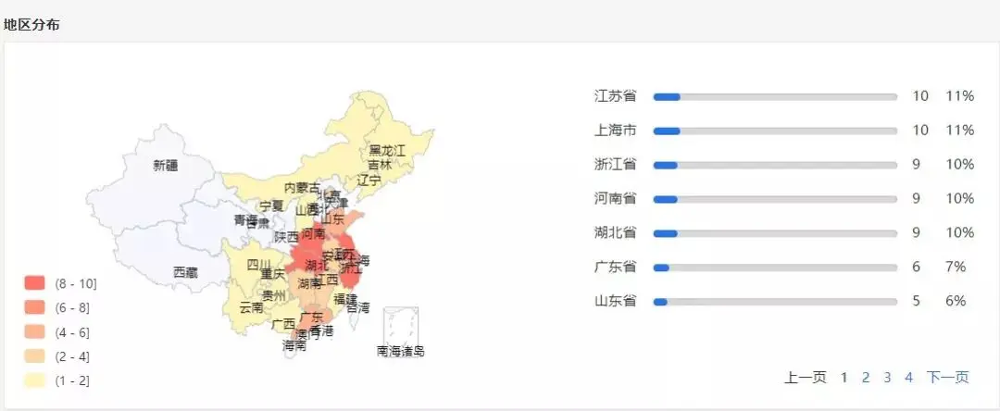
小天使分布地
下面是我看到的部分截图，还有很多信息我没有看到，没有办法一一放上来，这里，代求助者向众天使表示感谢。
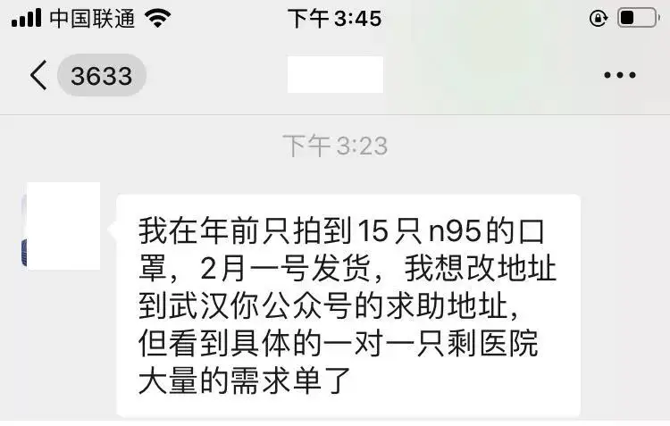
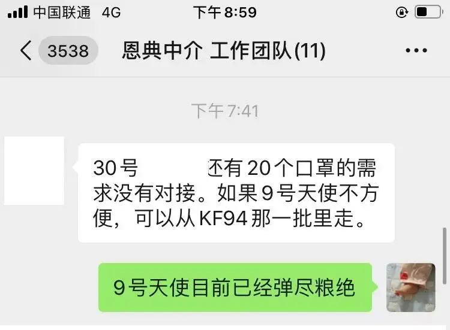
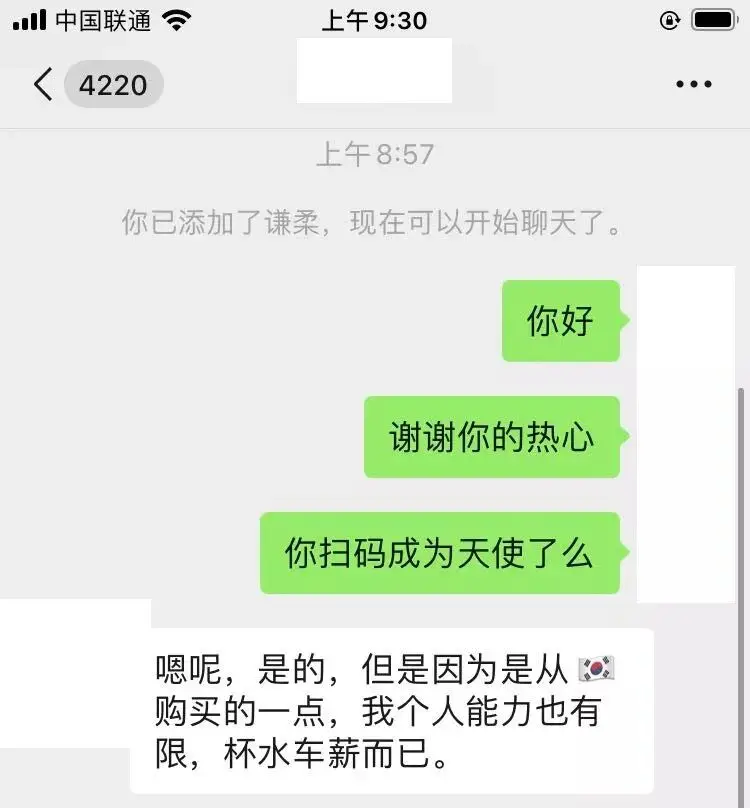
你们的爱心成为了很多人的温暖。
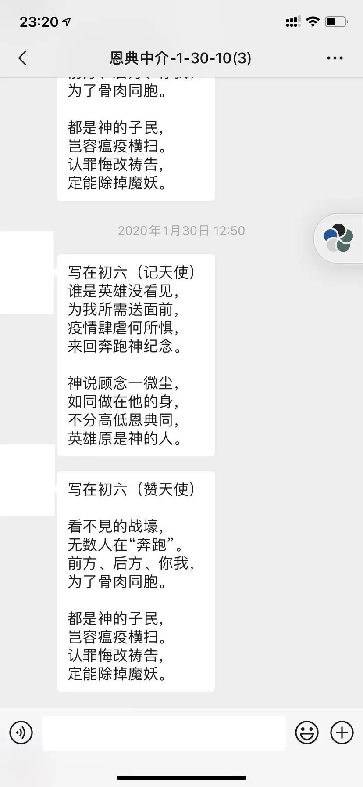
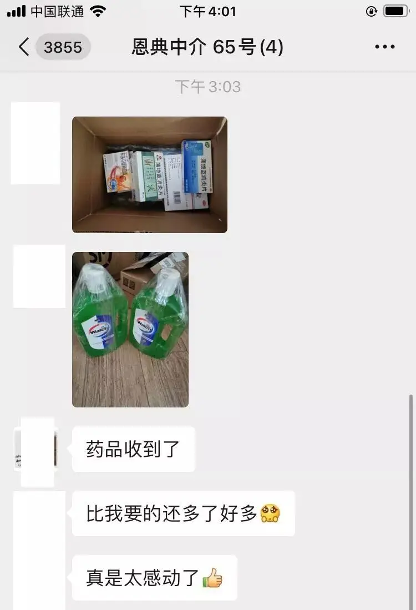
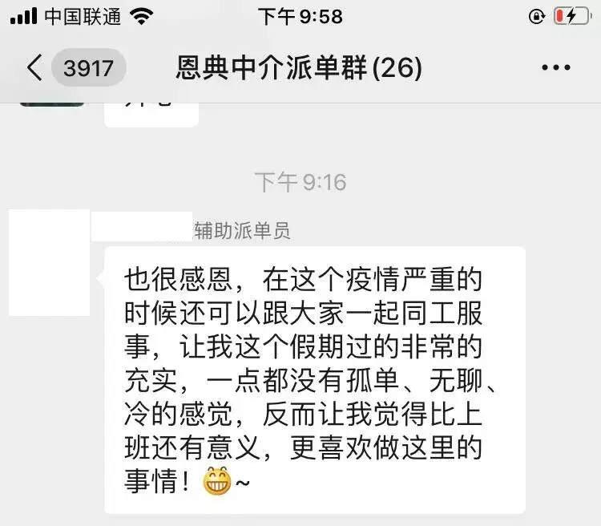
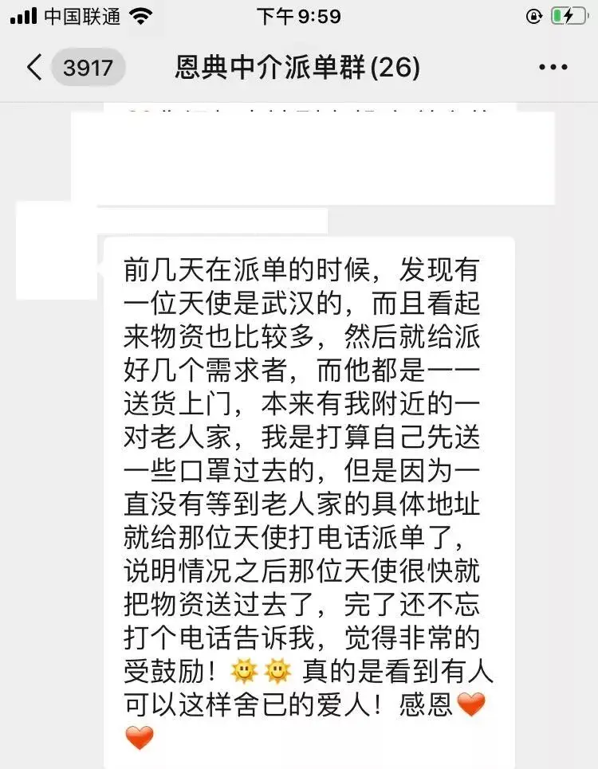
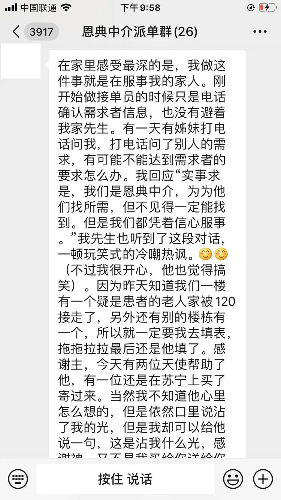
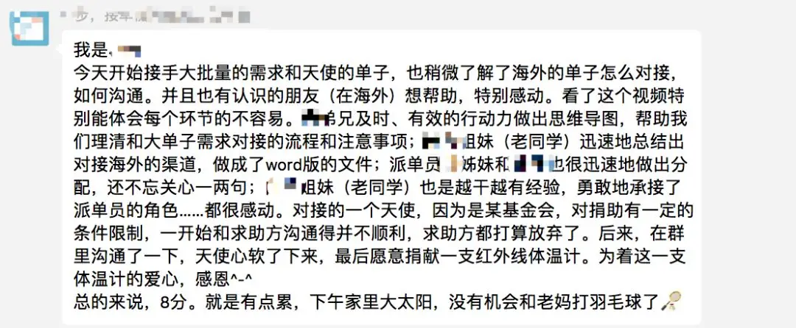
同时，有很多天使想要为湖北的受难者提供食物。
但目前食品无法寄出，我们也忙着一直还没有和您联系。
这里，向大家表示抱歉。
三、进展信息公开
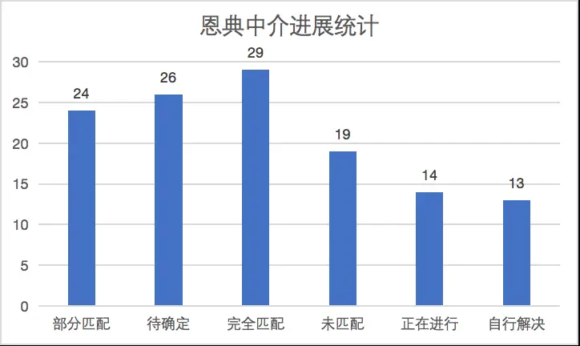
求助单号缺乏物资情况说明匹配天使匹配程度是否发货107今年回家探亲（随州市某乡）回来之后不久就封村了，我们大队也没有好多资源给老百姓，所以我们求助口罩，大队卫生室求助两套防护服，十个医用口罩，红外测体温计三个，看看可以不可以帮助我们。家庭和xx村委会大队所有农民，卫生室使用
未匹配
106奥司他韦 75克标准5盒 莲花清瘟颗粒/胶囊 5盒 盐酸阿比多尔片 5盒 盐酸莫西沙星片 5盒个人家庭使用60正在进行
105医用口罩500个本人在武汉当地，因为口罩缺乏，正常服侍无法进行，代职同工一共20多人，出去服侍弟兄姊妹使用
正在进行
104N95口罩（GB19083-2010或高于此标准）20000个医院一线医护人员使用
未匹配
103医用口罩，30个，医用酒精，5瓶，84消毒液，1瓶因为家里需要去透析，每个星期都要去3天，每次出门抖需要消耗2个口罩，因为我是残疾人，所以需要我的家属陪同，家里也需要消毒。76正在进行
102医用外科口罩20个，酒精消毒 2瓶我家就在隔离医院旁边几百米，离病区很近，需要家庭自用69部分匹配
101医用外科口罩，5个家庭自用66完全匹配
100医用外科口罩 50 个 酒精 75 ％ 2 瓶家用 （外面买不到了）
部分匹配
99医用外科口罩 30 个，酒精 4 瓶， 84 四瓶自家用。屋里老人完全没有（两老人在来凤），外面买不到。老人不会用智能手机不会微信。申请的物质是两个家庭的。64部分匹配
98防护服 30 套，护目镜 10 个，体温计 3 支。教会同工外出赠送口罩使用68部分匹配是97医用口罩， 500 个，酒精棉球， 10 盒，防护服 200 套，体温计 50 支 ,N95 口罩 100 个我们有信徒是在一线的医护人员，这些物资比较缺，我们想直接帮助他们，我自己的孩子就在一线上，她和她的同事好多天都不能回自己家来了，都是半隔离状态，我们只想帮帮她们还有一些信徒需要这些口罩等。不用配单自行解决
96N95 口罩 5 个 医用外科口罩 60 个 75 度医用酒精 4 瓶家庭自用57部分匹配
95医用防护服 5000件，医用防护N95口罩（GB19083-2010）5000个，消毒凝胶 2000瓶咸宁市第一人民医院使用。上述物资是目前医院紧缺物品，其中一次性医用防护服仅能维持2天使用，非常紧急。近期邮政EMS物流可到达本院。54部分匹配
94医用口罩，酒精棉球家庭自用55正在进行
94医用口罩，酒精棉球家庭自用57正在进行
93N95口罩6个，体温计两支， 消毒灯两个，一次性口罩50个，一次性塑料手套2包家庭用
待确定
92汉川 目前确诊人数最多的县级市。 离武汉高速半小时， 疫情严峻，物资紧缺。 确诊194例 至今没有一例治愈出院的好消息。 希望能得到更多的支持。（我老家是汉川人，现在武汉，家人朋友都在汉川。得知汉川疫情也很严重，心中很是难过😭也很着急，所述一切属实）这个是汉川一个公益组织机构。所以不是有效需求请不需要派单，xx核实了的。不需要派单自行解决
91酒精棉球家庭自用51完全匹配
8984消毒液10斤医用外科口罩200个场所消毒和发给信众35未匹配
8984消毒液10斤医用外科口罩200个场所消毒和发给信众55未匹配
8984消毒液10斤医用外科口罩200个场所消毒和发给信众56完全匹配
88医用外科口罩赠送47待确定
87医用外科口罩赠送48待确定
86N95口罩30个，医用防护口罩500个（GB19083-2010标准），医用外科口罩500个（有医疗器械注册证），防护服100套（GB19082-2009），一次性塑胶手套2000双，护目镜100个，医用帽子300个，防护面罩100个，消毒液200瓶，隔离衣100件医院用39待确定
86N95口罩30个，医用防护口罩500个（GB19083-2010标准），医用外科口罩500个（有医疗器械注册证），防护服100套（GB19082-2009），一次性塑胶手套2000双，护目镜100个，医用帽子300个，防护面罩100个，消毒液200瓶，隔离衣100件医院用59完全匹配是85医用外科口罩两千个，酒精五件都有
未匹配
84家庭六人需求n95口罩15个，巴氏消毒液1瓶。谢谢！家庭自用42待确定是84家庭六人需求n95口罩15个，巴氏消毒液1瓶。谢谢！家庭自用36完全匹配
83医用口罩50个 酒精棉球5盒 84消毒液3瓶家庭自用48部分匹配是83医用口罩50个 酒精棉球5盒 84消毒液3瓶家庭自用42待确定
82我是安徽援鄂抗疫第一批医疗队成员，由于上班之余还要兼顾医疗队的宣传工作，在武汉援鄂期间需要借笔记本电脑一台方便打字办公用，本人在超市未能发现卖笔记本电脑的，否则自己就买一台了个人办公用自己已经购买自行解决
81医用外科口罩30个家庭自用，母亲在超市正常上班需要，家里没有医用口罩，药房买不到，网上买的年后发货的口罩卖家发短信说库存捐给医院了，没货了，给退款51完全匹配是80n95口罩，16个，体温计1支家庭自用38完全匹配
80n95口罩，16个，体温计1支家庭自用36完全匹配需要明天询问快递79浓度百分之七十五的酒精2瓶，84消毒液2瓶，莲花清瘟胶囊2盒，肺力咳2瓶，95口罩家里没消毒的也没药，口罩快用完了45待确定需要明天询问快递79浓度百分之七十五的酒精2瓶，84消毒液2瓶，莲花清瘟胶囊2盒，肺力咳2瓶，95口罩家里没消毒的也没药，口罩快用完了44待确定是79浓度百分之七十五的酒精2瓶，84消毒液2瓶，莲花清瘟胶囊2盒，肺力咳2瓶，95口罩家里没消毒的也没药，口罩快用完了42待确定是78医用外科口罩50个，75%医用酒精10瓶或消毒液医用口罩15个，84消毒液两瓶4待确定
77n95/kn95口罩100个 医用酒精10瓶 消毒液10瓶 体温计5支kn95建议5个 消毒液36待确定
77n95/kn95口罩100个 医用酒精10瓶 消毒液10瓶 体温计5支kn95建议5个 消毒液40正在进行
76口罩10个，酒精6瓶，体温计1个口罩，药品43完全匹配
74一次性医用口罩30个，消毒液2瓶重复填了75号43完全匹配
74一次性医用口罩30个，消毒液2瓶重复填了75号26完全匹配是73防护面罩50 防护屏50机构用：护目镜37自行解决
73防护面罩50 防护屏50机构用
待确定
72医用口罩15个N95口罩10个4完全匹配
71医用酒精两瓶，阿莫西林四盒，莲花清胶囊四盒，百合固金片四盒，口罩十个酒精棉片40部分匹配
71医用酒精两瓶，阿莫西林四盒，莲花清胶囊四盒，百合固金片四盒，口罩十个阿莫西林16部分匹配需要明天询问快递70酒精棉球1盒，医用酒精1瓶，家庭自己使用38自行解决
7084消毒液一瓶
求助者自己解决自行解决
69口罩最好N95，200个，防护服，200套湖北黄梅县独山镇医院需要，面对疑似几乎赤膊上阵了27部分匹配 是68医用酒精3瓶。一个小型喷壶，用e来装酒精家庭自用40 号的需要确认 SF ，如果有其它的人有酒精就先从虽的地方发自行解决
67体温计 1支家庭自用。多口之家，目前小叔子一家三口带了一支额头测温计，两位老人和我们一家四口暂无体温计。70 号正在进行
66N95口罩100个，医用酒精10瓶，防护服100套，护目镜50个N95成人45个，外科一次性口罩30个，84消毒液四瓶（上海40 号正在进行
66N95口罩100个，医用酒精10瓶，防护服100套，护目镜50个N95成人45个，外科一次性口罩30个，84消毒液四瓶（上海36 号部分匹配是65医用口罩，50个，酒精消毒液，2瓶，84消毒液，2瓶，布洛芬，2盒，蒲地蓝，1盒
33完全匹配 是65医用口罩，50个，酒精消毒液，2瓶，84消毒液，2瓶，布洛芬，2盒，蒲地蓝，1盒
完全匹配是65医用口罩，50个，酒精消毒液，2瓶，84消毒液，2瓶，布洛芬，2盒，蒲地蓝，1盒家庭自用
待确定
65医用口罩，50个，酒精消毒液，2瓶，84消毒液，2瓶，布洛芬，2盒，蒲地蓝，1盒
完全匹配
64医用外科口罩，75％的酒精
33部分匹配 是63急用医用口罩 30 个，酒精棉球两盒退烧药25 号天使部分匹配 是63急用医用口罩 30 个，酒精棉球两盒
待确定
60口罩10个/15个家庭自用32 号完全匹配是60口罩10个家庭自用
完全匹配是59医用口罩50个，酒精棉球2盒，防护服5套，体温计2支，酒精5瓶，84消毒液2瓶。家庭自用。我们去多家药店多次，买不到以上商品。谢谢支持!30 号部分匹配是58医用口罩100个酒精棉球3盒在医院上班的医务人员，没有买到口罩，上班下班路上使用30 号部分匹配是57酒精小瓶的20瓶我是家用，剖腹产，家人来往医院家里之间送饭，消毒衣物酒精买不到了。我这边是湖北荆州。我们市里的医院医疗物资也很匮乏。
未匹配
56医用口罩100个，防护服20套，医用酒精20瓶看下外地的人能否买到医疗机构用
未匹配
55医用口罩10个 酒精棉球两盒10个口罩30完全匹配是55医用口罩10个 酒精棉球两盒
38完全匹配
54口罩9000个，84消毒液20箱！机构用口罩 9000 个， 84 消毒液 20 箱！未匹配
53口罩60个30个口罩32完全匹配 是52医用口罩30个，酒精棉球5盒，酒精2瓶，84一瓶
是（ 15 号天使在武汉这两天送货）正在进行
51医用口罩20个，酒精1瓶，84消毒液1瓶，体温计1个，棉签1包
匹配 15 号天使在武汉这两天送货正在进行
50十个医用口罩，体温计1支，三盒对疫情有用的药，家庭自用15 号天使有体温计和口罩自行解决
49医用口罩20个，咳咳药阿斯美5瓶，及靶向药物5盒，的购买。居家自用正在和 15 号天使沟通是否能购买到口罩和药品正在进行
48医用N95口罩10枚，医用一次性防护服5套，医用护目镜1个，面罩10个。
27 号天使 KF94 的西安教会部分匹配
47KF94口罩 30个，或者外科医用口罩也可
27 号天使 KF94 的西安教会完全匹配
46一个标枪式测温仪在疫区搬运物资，易感，需要标枪测温仪28 号天使未匹配
45医用口罩 100个 体温计 1支
未匹配
43N95口罩30个，防护服6套。社区卫生服务站24 号雯雯部分匹配已发货42能全素 整蛋白型肠内营养剂 320g /盒 （粉剂） 5 盒，导管固定L型鼻贴 10个，鼻饲管固定 全棉弹性胶带一卷（5cmx5m）家中86岁瘫痪卧床老人
自行解决
41阿比多尔三盒 莫西沙星三盒 双氯芬酸钠栓两盒家庭自用 家里人发烧五天！在蔡甸 医院不收 现在家自行隔离解决自行解决
40医用口罩2盒，75%酒精5瓶，酒精棉片2盒，一次性手套 2包。30个口罩27 号天使 KF94 的西安教会部分匹配是39n95口罩10只，符合医院安全标准的防护服10套，目镜10只媒体记者进医院采访15正在进行
38医用口罩50个老人和小孩都感冒了，但买不到医用口罩了，家庭自用，急需。
自行解决
37N95口罩5000个,一次性外科口罩20000个，一次性防水面罩1000个，防护服5000套，84消毒液1000瓶，手消毒液1000瓶，红外线体温仪60个，医用酒精1000瓶，护目镜500个供罗田县第三人民医院和凤山镇11个社区服务站29个村卫生室医务人员使用
未匹配
36护目镜4个，医用酒精5L
未匹配
35鸡蛋20个，医用口罩15个，米酒一瓶，汤圆一袋，消毒水家庭自用17正在进行
34医用口罩2000个，防护服120套医疗机构。27 号天使 KF94 的西安教会部分匹配
33酒精二瓶 84 消毒片二盒 医学外用口罩三十个个人家庭使用（浩子已加）16完全匹配已发货32口罩30，棉签10包，纱布10包，医用胶带5卷家里透析病人需要外出去医院，需要每天处理伤口15完全匹配
3184消毒液2瓶，医用酒精或酒精喷剂3瓶，医用棉签20包，医用纱布7.5*7.5要20片，或5*7要40片
13待确定
30个人防护口罩20个，84消毒液一平家中无医用防护口罩和消毒液团队成员解决待确定
30个人防护口罩20个，84消毒液一平家中无医用防护口罩和消毒液27 号天使 KF94 的西安教会部分匹配
29抗丙肝药品一盒需要从湖北省孝感市云梦县寄到武汉东西湖区走马岭街11自行解决
28口罩50个，维生素c泡腾片一盒8个口罩18待确定
27口罩、胃药雷尼替丁、云南白药贴、16个口罩11正在进行
26口罩30，酒精2瓶家里老人27部分匹配
26暂时不动，有不合适反应了再调整
10待确定
25N95或医用外科口罩家里已经没有几个口罩了，这种情况不知道要持续多久，有点担心，不过现在也不出门了，只是出门买东西的时候需要戴口罩，家里东西还够吃一段时间，需求不是很紧急。9待确定
24医用口罩20个
4自行解决
23 藿香正气液1盒，84消毒液一瓶
8完全匹配是22湖北省中山医院分院阳逻医区B超室的记录员求助：因为物资紧缺，上级暂时没有给这样岗位的医务工作人员分配防护物资的计划，现向社会资源求助：医用外科口罩yy0469-2010，医用隔离衣，防护眼镜（少量即可，可以轮换着用）这三样就可以满足此岗位的需求
未匹配
21需要胶鞋昨天呼吸科护士已经在朋友圈发出，物质到达武汉2天没有派送到他们，她们如果没有收到，就没有口罩可以用了。希望她们送少量口罩也好
未匹配
20一次性医用口罩，有医用n95口罩最好，体温计，消毒用品，医用酒精主要用于家庭防护，因为是农村，各类物资都很匮乏，医务室就近药店都没有相应存货9待确定
18口罩50个消毒酒精家里五口人口罩好没有了楼下药店都关门了5未匹配
17酒精*10瓶 口罩100只特别需要酒精和口罩。封城来的太突然，27 号天使 KF94 （西安）部分匹配
17酒精*10瓶 口罩100只特别需要酒精和口罩。封城来的太突然，
完全匹配需要邮寄到昆明再邮寄武汉16医用外科口罩100只，酒精10瓶
27 号天使 KF94 的西安教会部分匹配
15一次性使用医用口罩（YY/T0969-2013）200个，75%医用酒精1000毫升自己及家人和弟兄姊妹27待确定
14n95口罩（10个）或者 医用外科口罩（20个）县城上口罩断货，最普通的一次性口罩都没有。 每天上班要使用。12待确定
13N95口罩若干，消毒酒精500ml 或一瓶主要是买不到！5完全匹配
12N95口罩，10只用于自我及家人防护9待确定
11n95口罩3个及3个以上，医用外科口罩20个及20个以上。不是武汉地区可以送吗。12待确定
10医用酒精2瓶、口罩20只
5完全匹配
9外科医用口罩2包，酒精4瓶。
9待确定
875％医用酒精，3瓶；84消毒液，2瓶家里五口人，两位80岁以上的老人5待确定
7医用级别的头帽，护目镜，防护服，口罩，鞋套，消毒灯，剂江岸区
未匹配
6酒精消毒剂（75%）2L
5未匹配酒精暂时无法寄出5N95口罩，外科口罩，医用防护服，医用一次性塑胶手套，护目镜，医用帽子，一次性使用手术衣，防护面罩
27 号天使 KF94 的西安教会部分匹配
5N95口罩，外科口罩，医用防护服，医用一次性塑胶手套，护目镜，医用帽子，一次性使用手术衣，防护面罩
68未匹配
3口罩若干，家庭使用，但越安全越好接受方为85岁老人，出门15 、 hopeful完全匹配
1备用发WH的货改为发66号求助的医院了
27 号天使 KF94 的西安church完全匹配
四、恩典中介计划一直进行中
如果你需要帮助，请扫码
▼

如果你可以提供帮助，请扫码
▼
如果你要了解最新进展，请扫码
▼
特别提醒：
我们不需要金钱捐助
只需要物资
▼


这里没有挑逗你眼目情欲的小鲜肉
也没有挑动你肉体情欲的段子
更没有膨胀你今生骄傲的鸡血
我们只在乎那些最质朴真诚的作品
在那里我们才能恢复真正的想象力
我们也坚信这才是我们真正需要的

ID:Six_hundred_hits
长按二维码，一键关注
【六百击】